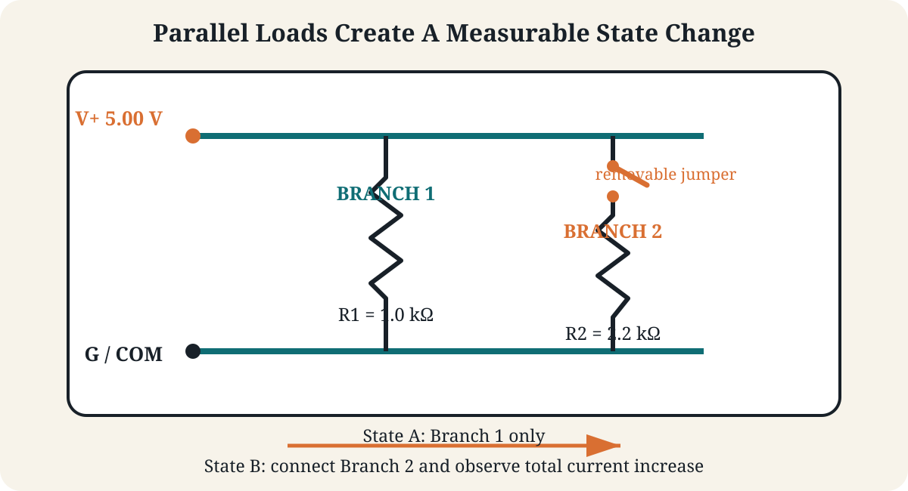
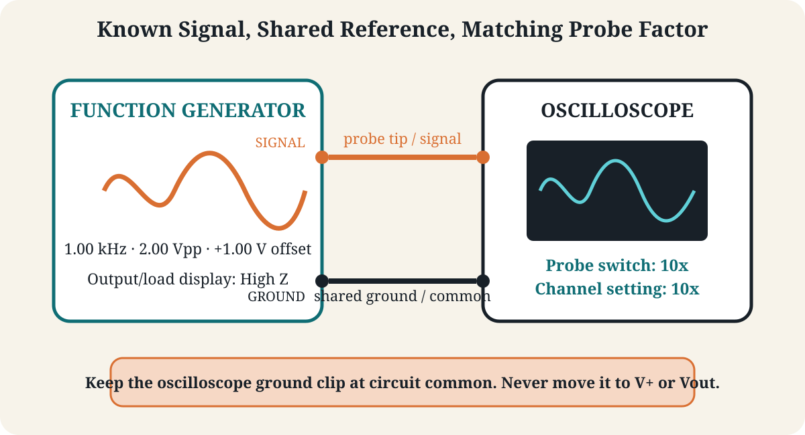
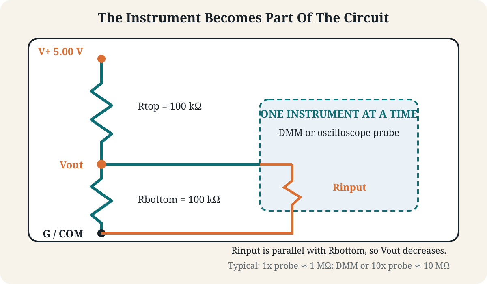

Laboratory
Lab 02 · Week 2 · September 11, 2026
Measurement Integrity and Power Signatures
Parallel loads, instrument loading, and trustworthy waveform measurements
Learning Outcomes
By the End of This Lab
- Predict and measure how an added parallel load changes equivalent resistance, source current, and total power
- Explain how finite instrument input resistance changes the circuit being measured
- Configure a function generator and oscilloscope to produce and measure a repeatable sine wave
- Recognize incorrect probe attenuation and AC/DC coupling as measurement-configuration problems
- Separate the physical signal, the instrument configuration, the displayed result, and the conclusion drawn from it
The Big Picture
What You Are Doing
- Extend the Lab 1 predict-measure-compare method to a circuit with parallel loads.
- Treat source-current change as a simple electrical signature of device state.
- Generate a known sine wave and verify its amplitude, frequency, RMS value, and offset.
- Create and correct two controlled configuration errors that make a healthy signal look wrong.
- Compare a high-value divider with no instrument, a DMM, a 1x probe, and a 10x probe.
Before Lab
Preparation
- Review the Week 2 definitions and formulas for parallel resistance, branch current, loading, amplitude, period, frequency, RMS, and offset
- Bring a calculator and open the Lab 2 report before beginning
- Recall the Lab 1 rules: power off before rewiring, resistance is measured only on a de-energized circuit, and current mode is never placed across a source
Student Resources
Lab Report
Follow These Steps
Lab Walkthrough
Set Up The Bench
- Open the Lab 2 report and enter your name and lab partners.
- Find the DMM, power supply, oscilloscope, function generator, probe, breadboard, leads, and resistors. Record instrument model numbers in the report and ask about missing or damaged equipment.
- Keep the power-supply and function-generator outputs disabled. Set the supply to
5.00 Vwith a25 mAcurrent limit using the instructor-approved procedure. - Put the DMM black lead in
COMand the red lead inV/Ω. Do not move the red lead to a current jack until the procedure explicitly tells you to do so. - Leave the oscilloscope probe disconnected until the guided tutorial. Its ground clip will connect only to circuit common or generator ground, never to a supply-positive rail or divider midpoint.
Build The Parallel-Load Circuit
- With the supply output disabled, build two resistor branches from
V+toG: Branch 1 containsR1 = 1.0 kΩ; Branch 2 containsR2 = 2.2 kΩand can be connected or disconnected with a jumper.

- For State A, leave Branch 2 disconnected. Predict equivalent resistance, Branch 1 current, total source current, and total power.
- For State B, connect Branch 2 in parallel. Predict equivalent resistance, both branch currents, total source current, and total power.
- Before applying power, explain why adding Branch 2 must decrease equivalent resistance and increase total source current.
Measure The Two Load States
- Confirm the DMM is still configured for DC voltage. Enable the supply and verify approximately
5.00 VacrossV+andG. - In State B, measure the voltage across each branch once. Parallel branches should share approximately the same voltage.
- Disable the supply before measuring current. Move the red DMM lead to the instructor-approved current jack, select a safe DC-current range, and open the source path at
V+. - Insert the DMM in series with the entire circuit, enable the supply, and record total current for State A. Disable the supply before connecting Branch 2, then repeat for State B.
- While the State B current is displayed, take the required photograph. Check that the circuit, series meter connection, and reading are visible before continuing.
- Disable the supply, remove the DMM from the source path, restore the circuit, and immediately return the red lead to
V/Ω. - Complete Table 1. Treat the difference between State A and State B current as a simple power signature: an observer can distinguish load state without seeing what the second branch represents.
Learn The Function Generator
- Disable the DC supply and disconnect it from the breadboard. Keep the function-generator output disabled while making connections.
- On the function generator, locate the waveform selector, frequency, amplitude, DC offset, load/display setting, output connector, and output-enable control.
- Select a sine wave at
1.00 kHz,2.00 Vpp, and+1.00 Voffset. SelectHigh Zwhen that load setting is available. If your generator uses different controls or does not offer a load setting, follow the instructor's model-specific directions. - Connect generator signal to the oscilloscope probe tip and generator ground to the oscilloscope ground/reference as shown. Do not connect the scope ground clip anywhere else.

Learn The Oscilloscope
- On the oscilloscope, locate the channel input, channel menu, volts-per-division control, vertical-position control, seconds-per-division control, trigger controls, measurement menu, and capture or save control.
- Set the physical probe switch to
10xand set the oscilloscope channel probe factor to10x. Select DC coupling so the display includes both the changing waveform and its DC offset. - Set the channel near
500 mV/divand the timebase near200 µs/div. Enable the generator output, then adjust the trigger source, slope, and level until the waveform is stable. - Turn volts/div one step in each direction and observe that the trace changes display height even though the generator setting does not change. Restore approximately
500 mV/div. - Turn seconds/div one step in each direction and observe that the number of visible cycles changes. Restore approximately
200 µs/div. - Move the trace with the vertical-position control, then restore it. Display position is not the same as the waveform's measured DC offset.
- Before reading the oscilloscope, complete the blank entries in Table 2's Expected from Generator Settings column: period from frequency, peak amplitude from
Vpp, sine-wave AC RMS from peak amplitude, and maximum and minimum from offset plus or minus peak amplitude. - Measure and record
Vpp, peak amplitude, maximum, minimum, DC offset, period, and frequency in Table 2. Compare the oscilloscope readings with the calculated expectations. - Before changing any setting, take the required baseline photograph or screenshot. Check that the waveform, volts/div, time/div, probe factor, coupling, and measured values are readable.
Configuration Challenge 1: Probe Factor Mismatch
- Record the correct baseline amplitude before changing anything.
- Leave the physical probe switch at
10x, but deliberately set the oscilloscope channel probe factor to1x. Do not change generator amplitude. - Record the displayed amplitude and compare it with the baseline. Explain why the display is wrong even though the electrical signal did not change.
- Restore the channel setting to
10x, verify the baseline amplitude returns, and record the correction in Table 3.
Configuration Challenge 2: Coupling Hides The Offset
- With the correct 10x probe configuration restored, record the DC-coupled waveform's
Vppand offset. - Change only the oscilloscope channel from DC coupling to AC coupling. Record what happens to the displayed offset and what remains approximately unchanged.
- Explain why AC coupling can be useful but can also hide an important DC component.
- Before restoring DC coupling, take the required challenge photograph or screenshot with the changed setting visible. You may instead use a readable photograph from Challenge 1.
- Restore DC coupling, confirm the original display returns, complete Table 3, and verify that you have one challenge image before disconnecting the generator.
Build The Loading Divider
- Disable the generator output and disconnect it from the oscilloscope. With the DC supply disabled, remove the parallel-load circuit and build a divider using
Rtop = 100 kΩfromV+toVoutandRbottom = 100 kΩfromVouttoG.

- Calculate the ideal unloaded
Vout. Then use the input resistances provided by the instructor to predictVoutwith the DMM, 1x probe, and 10x probe connected one at a time. - For each instrument, treat its input resistance as parallel with
Rbottom. Record the input resistance, effective lower-leg resistance, and predicted voltage in Table 4. - Enable the DC supply. Attach only one measuring instrument at a time between
VoutandG; attaching the DMM and oscilloscope together creates a different loading condition. - Measure
Voutwith the DMM and record the result. - Take the required loading-divider photograph while the DMM is connected and displaying
Vout. Check that the divider, meter connection, and voltage reading are visible before dismantling the circuit. - Disconnect the DMM, then measure
Voutwith the oscilloscope probe in 1x mode with the channel set to 1x. Repeat with the probe and channel set to 10x, then return both to 10x when finished. - Record each result and calculate loading error relative to the ideal unloaded voltage. Identify which instrument changed the measured circuit most and explain why.
Finish And Submit
- Complete all four content tables and verify units, settings, predictions, and measured results.
- Complete the Evidence section with four readable photographs or screenshots: State B current, the correctly configured baseline waveform, one configuration challenge, and the loading-divider DMM measurement.
- Complete the Conclusion in your own words. Explain one real circuit change, one measurement-induced circuit change, and one display-only configuration error. State what the evidence supports and what it does not prove.
- Disable both source outputs. Set the power supply to its storage state, return the scope to DC coupling and 10x, return the DMM leads to
COMandV/Ω, remove components, and restore the bench. - Save the completed report, export it as a PDF, and submit the PDF through Learning Suite.
Why This Lab Matters
- Device operating states can produce repeatable current and power signatures even when payload data is unavailable
- Measurement tools become part of the circuit and can create apparent anomalies that are not device faults or attacks
- Incorrect probe factors, coupling modes, references, and generator settings can produce persuasive but false evidence
- Trustworthy signal analysis requires recording both the physical connection and the instrument configuration
Submission
- Complete the individual Lab 2 report and submit it in PDF form through Learning Suite